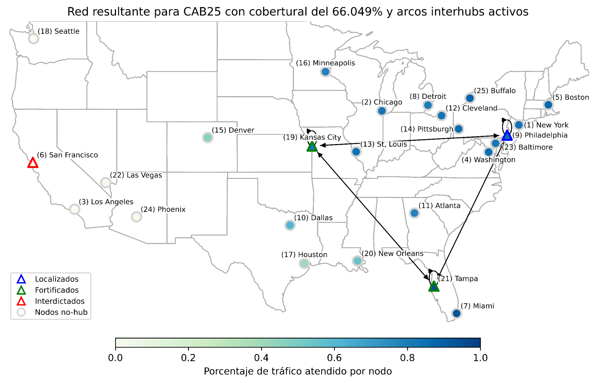
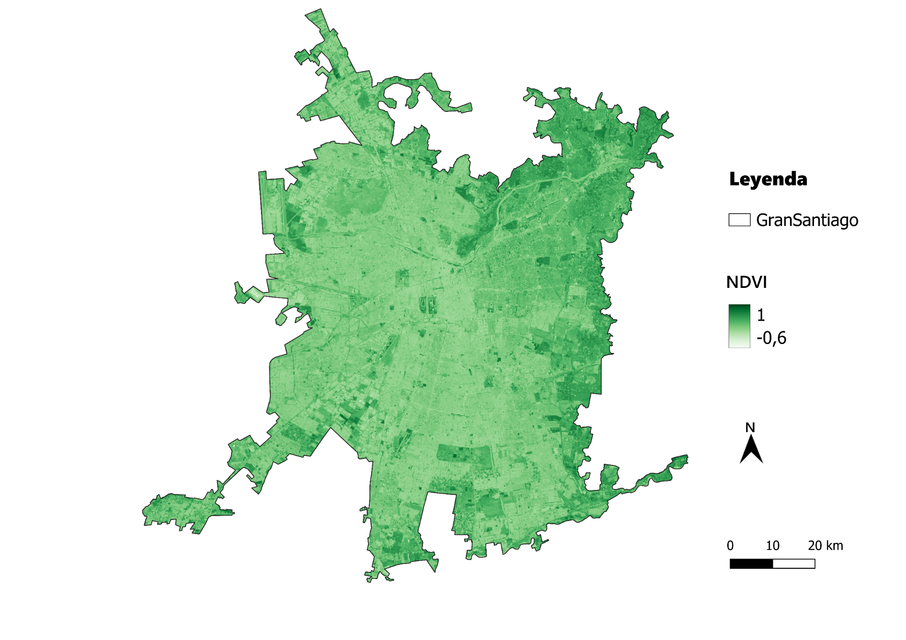
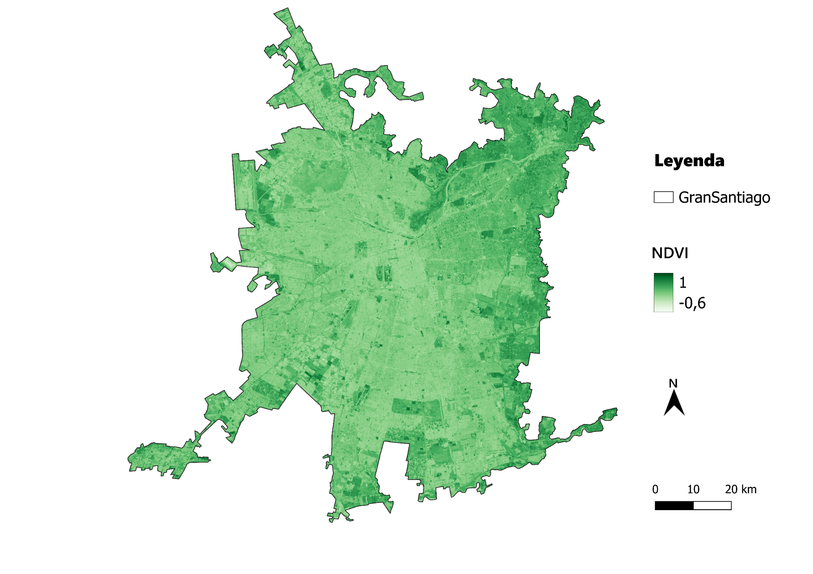
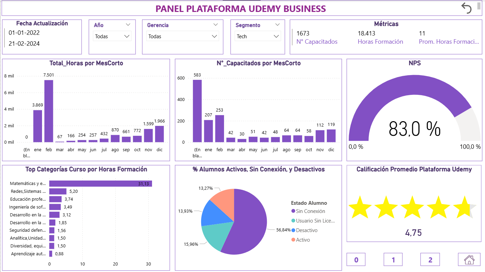
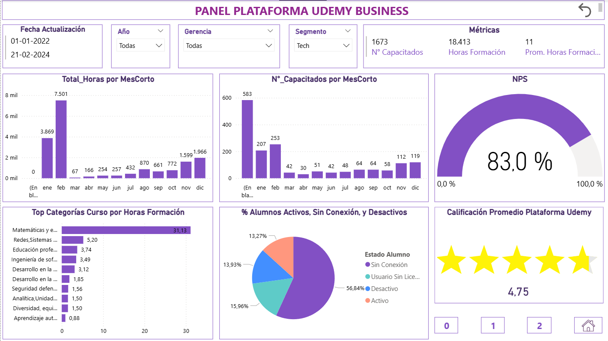

Modelo binivel de localización y fortificación de hubs post‑disrupción
Formulación binivel con decisiones del líder (localización y fortificación) y del seguidor (interdicción) para maximizar cobertura de demanda en una red hub-and-spoke bajo disrupciones. Se evaluaron escenarios y se obtuvieron redes robustas, con cobertura del 66,05 % en el caso mostrado.
- Objetivo: Maximizar cobertura post‑disrupción incorporando fortificación preventiva.
- Tecnologías: Python (Gurobi, NumPy, Pandas, Matplotlib, NetworkX), GeoPandas.
- Código fuente: disponible bajo solicitud.
- Aprendizajes: Modelado binivel, tuning de MIP, visualización de redes y análisis de sensibilidad.

 

 
